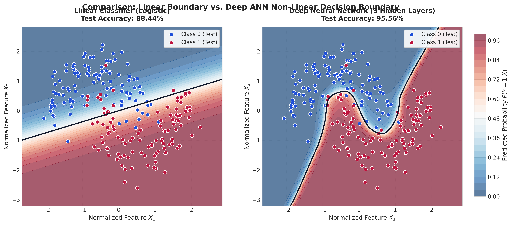
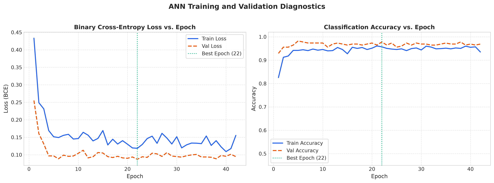
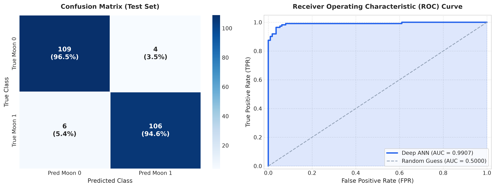
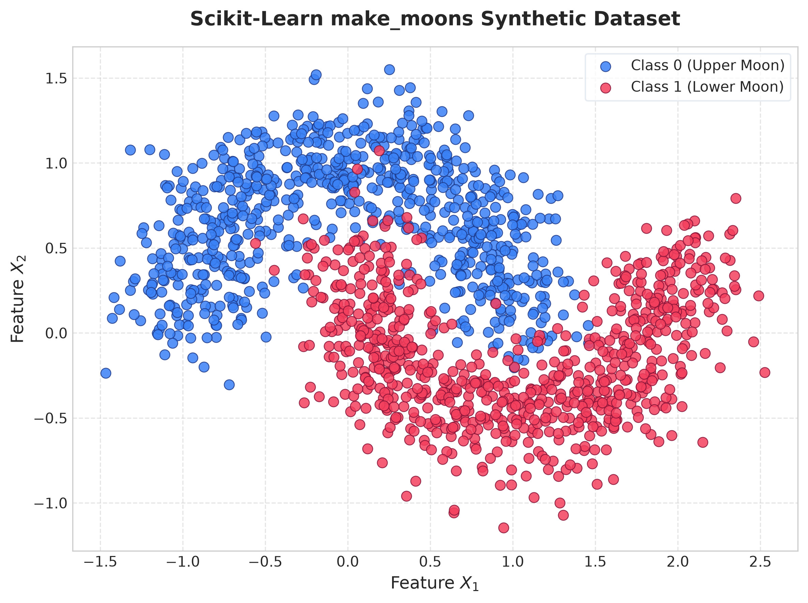

Live 2D Feature Space Playground
Click anywhere inside the feature plane to probe custom predictions
Network Architecture
Deep Multilayer Perceptron with Batch Normalization
Why Linear Models Fail on make_moons
Because the crescent moons interlock in 2D space, no single straight hyperplane ($w_1 x_1 + w_2 x_2 + b = 0$) can bifurcate both half-circles without severing the crescent tails. The ANN's non-linear activations ($\text{LeakyReLU}$) fold the coordinate space, enabling it to carve a sinuous S-curve boundary.
Model Diagnostics & Training Artifacts
Generated figures from the automated PyTorch execution pipeline

Decision Boundary: Linear vs. Deep ANN
Side-by-side contrast proving how the 3-layer neural network bends around the non-linear crescent geometry.

Training & Validation Learning Curves
Convergence of Binary Cross-Entropy loss and accuracy across epochs with early stopping at epoch 42.

ROC Curve & Confusion Matrix
Area Under the Curve (AUC = 0.9907) and balanced true positive/negative distribution on test data.

make_moons Distribution ($N=1500$)
Original synthesized 2D data showing interpenetrating clusters under 20% Gaussian noise.
Mathematical Formulation
Prevents the "Dying ReLU" problem by providing a non-zero gradient for negative pre-activations.
Applies the log-sum-exp trick for numerical stability, eliminating precision overflow during backprop.
Normalizes mini-batch activations to stabilize covariate shift and accelerate convergence speed.